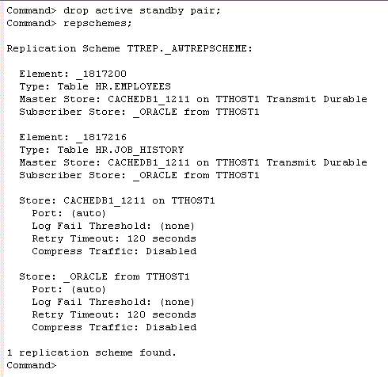
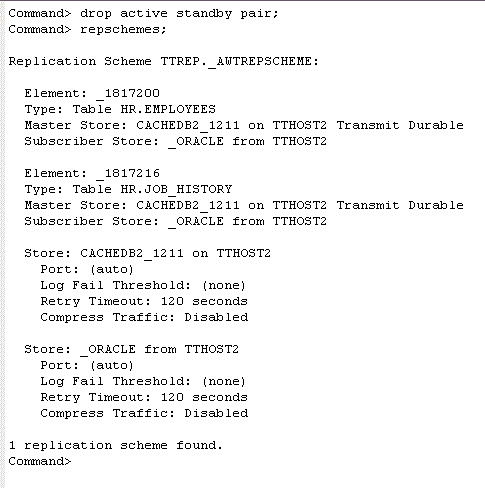

To remove an existing active standby pair configuration, you must stop the replication agents and drop the active standby pair replication scheme on each cache database. This tutorial removes the standby cache database, and reverts the configuration back to a single cache database.
This tutorial uses the DSN cachedb1_1211. The hostnames of the two machines are tthost1 and tthost2. cachedb2_1211 is the current active cache database on tthost2, and cachedb1_1211 on tthost1 is the standby cache database.
1. Stop the replication agents
Log in to ttIsql as the user cacheadm, and connect to the standby cache database cachedb1_1211.
ttIsql
connect "dsn=cachedb1_1211;uid=cacheadm;pwd=cacheadm;oraclepwd=cacheadm";
Use the built-in procedure ttRepStop to stop the replication agent on cachedb1_1211.
call ttrepstop;
Repeat the above step on cachedb2_1211.
2. Remove the active standby scheme
Remove the active standby pair schema in cachedb1_1211 by using the DROP ACTIVE STANDBY PAIR statement. Use the ttIsql command repschemes to verify that the active standby replication scheme has been removed.
drop active standby pair;
repschemes;
Repeat the above step on cachedb2_1211.

3. Remove cache groups from the previous standby cache database
The example below shows how to remove the two cache groups that were created in the earlier section from cachedb1_1211.
Enter the following DROP CACHE GROUP statements in ttIsql, to remove the cache groups cacheadm.d_awt and cacheadm.ro, and their corresponding cache tables from the previous standby cache database, cachedb1_1211.
drop cache group d_awt;
drop cache group ro;
Use the ttIsql command cachegroups to verify the removal of both cache groups from the cache database.
cachegroups;

4. Stop the cache agent on the previous standby cache database
Stop the cache agent on the previous standby database cachedb1_1211. Afterwards, exit out of ttIsql.
call ttcachestop;
exit
5. Destroy the previous standby cache database
Log in as the instance administrator, use the ttDestroy utility to remove the redundant standby cache database (cachedb1_1211) on server 1 (tthost1).
ttdestroy cachedb1_1211